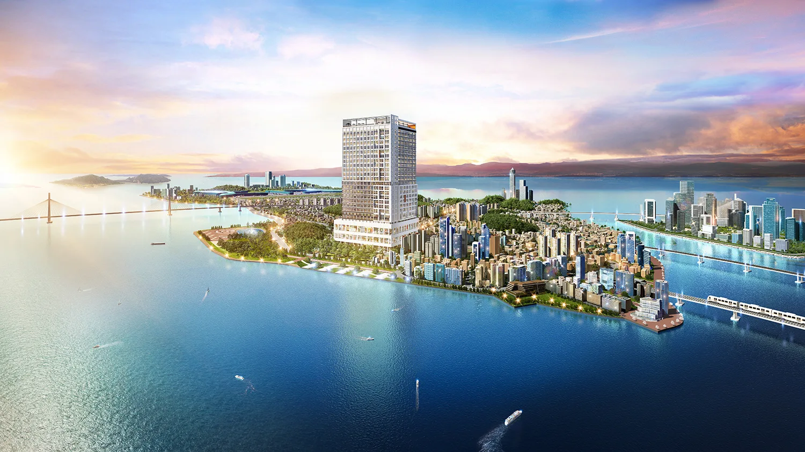
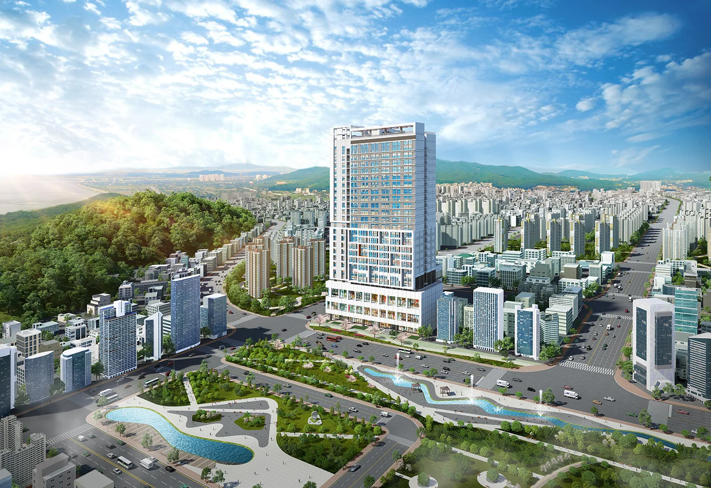
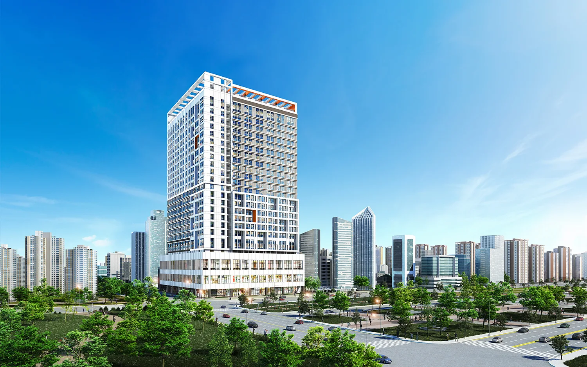
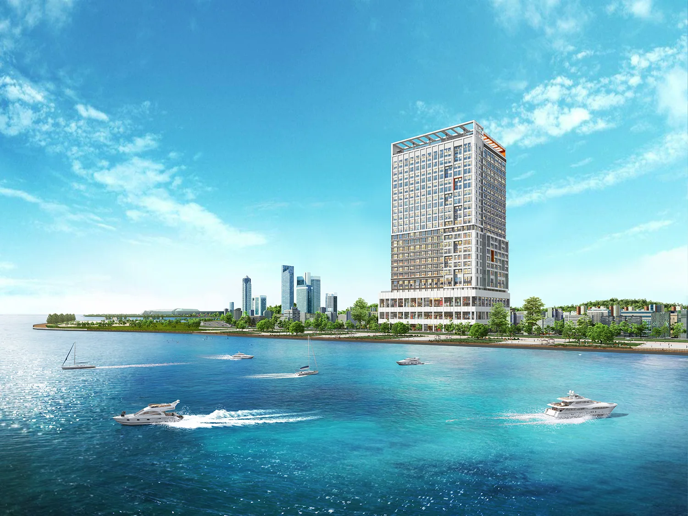
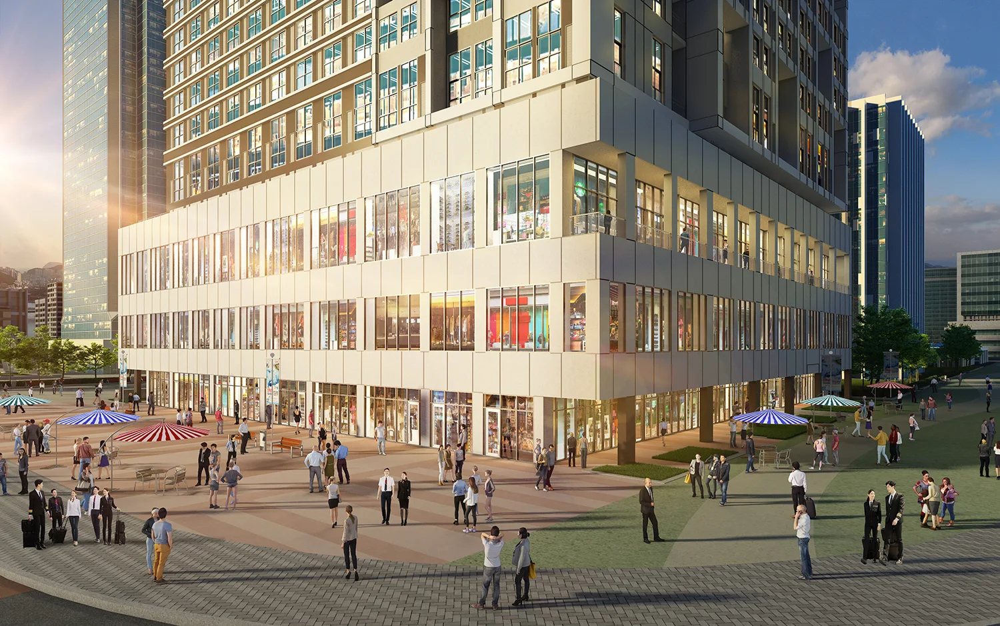
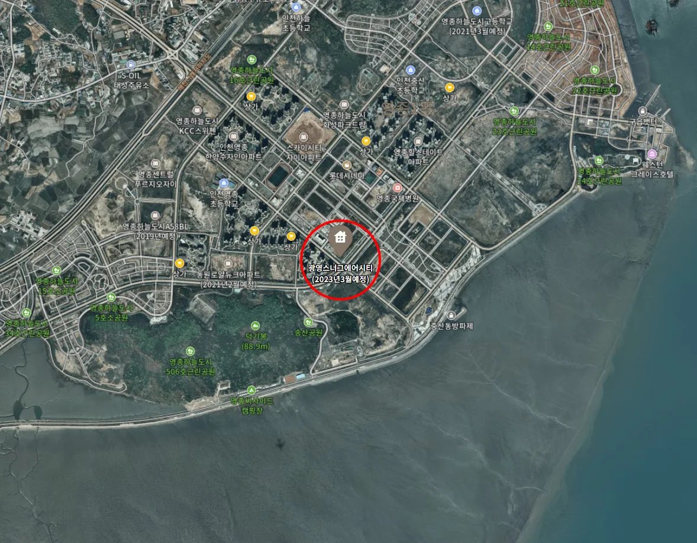
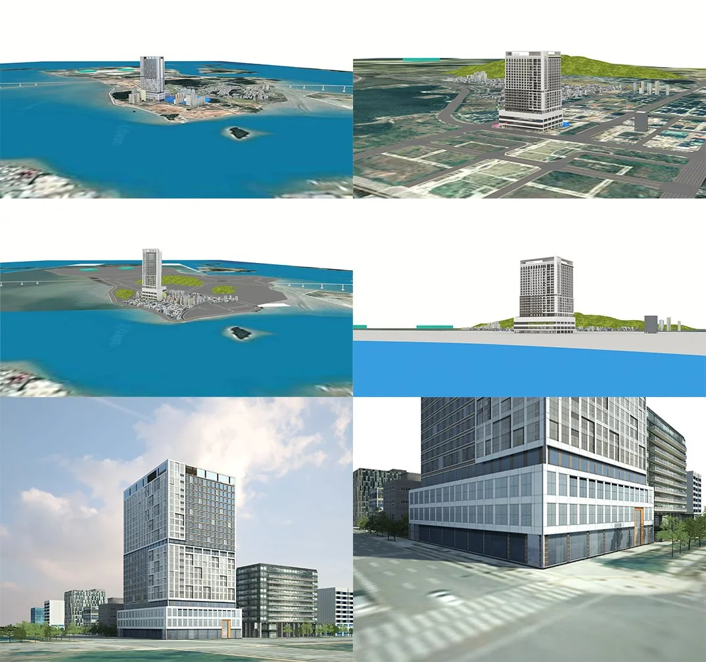
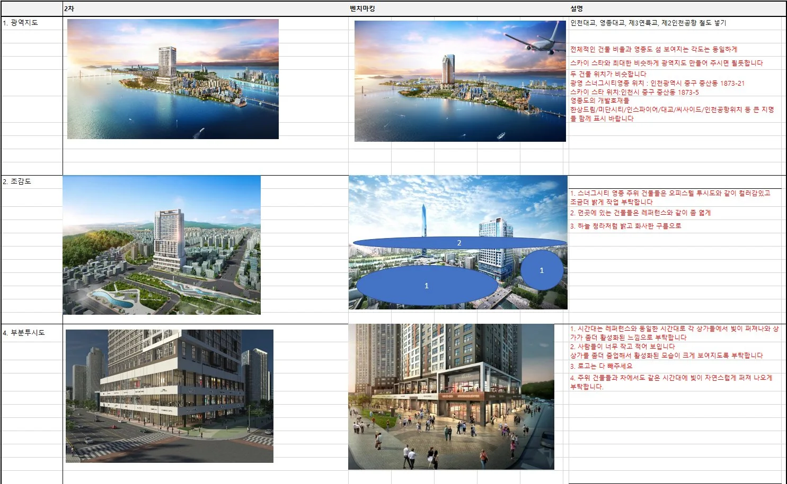
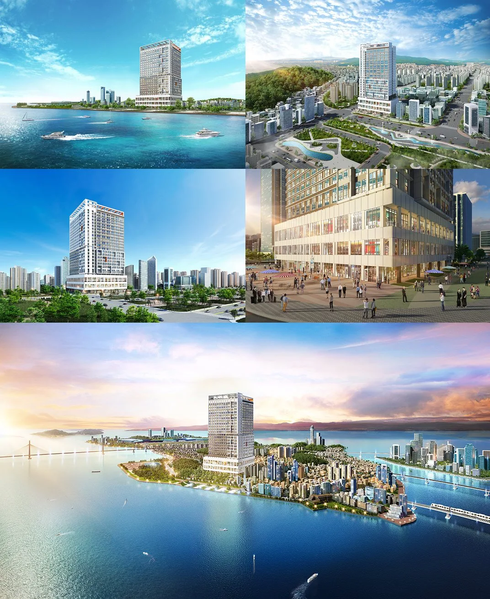

프로젝트 소개
인천 중구 중산동 1873-21 일대 광영스너그시티 영종오피스텔 분양광고에 사용된 조감도와 투시도 및 아이소메트릭 이미지 결과물입니다.





인천국제공항이 있는 영종도는 개발열이 식지 않고 여전히 투자 및 개발대상지가 되고 있는 듯 합니다.

메이크 그룹은 드론 촬영 및 현장실측, 그래픽 제작에 들어가는 모든 작업을 일체 사 내부에서 처리하고 있습니다. 이번 작업물도 현장 실측이 필요하였고 사실적인 이미지 제작을 위해서 드론 촬영까지 일체 진행하였습니다.

작업과정중 뷰선정단계입니다.
고객분들께서 궁금해하시는 것 중에 하나는 이미지 제작의 중간 과정에서 원하는 이미지가 제작되고 있는지 확인할 수 있는가에 대해서도 많이 물어보십니다. 메이크 그룹에서는 작업 중간 제작 이미지를 고객분들께 1주일 이내로 제공하여 최대한 고객분들이 원하시는 이미지가 제작 될 수 있도록 협업하고 있습니다.
이번 업체에서는 원하시는 뷰 이미지 샘플을 보내주셔서 뷰선정단계 기간을 단축시킬수 있었습니다.
뷰선정시 레퍼런스 이미지를 보내주시면 작업을 빠르게 진행하실수있습니다.

수정사항 요청시, 하나의 파일로 만들어서 한번에 정리해 주시면 보다 정확한 의사소통이 가능해집니다.
수정사항을 하나씩 따로따로 주시면 의사전달에 착오가 생길 수 있으므로, 파워포인트나 그림판같은 프로그램으로 수정을 원하시는 부분을 정확하게 설명해주시면 원활하게 작업이 이루어 집니다.

최근 1인가구가 늘어나면서 오피스텔 분양광고가 늘어나고 있습니다.
저희 메이크 그룹은 건축 분양광고 이미지 제작 전문 업체로서, 다수의 경험과 뛰어난 전문성으로 만족스러운 결과물을 제공해드리고 있습니다.
감사합니다.